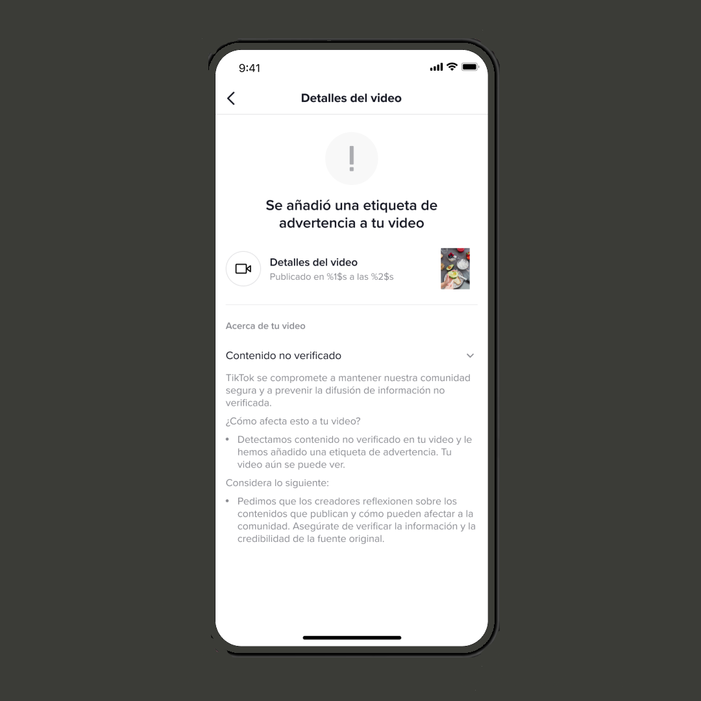
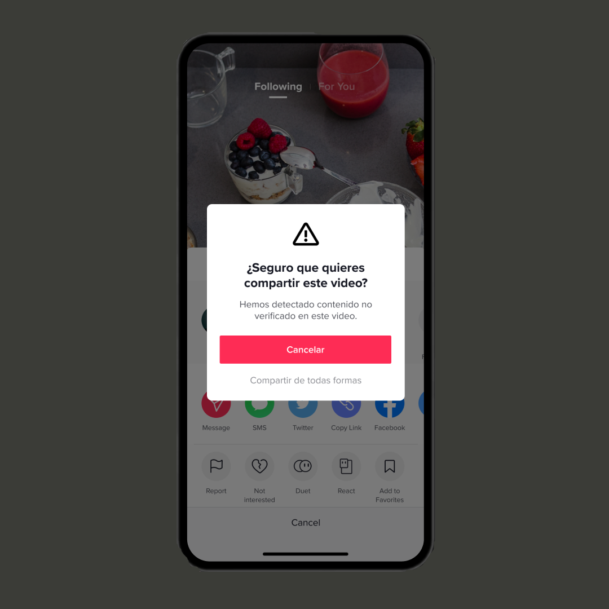

TikTok Introduces Warning Label To Combat Fake News

The short video application TikTok joins other social networks such as Twitter to help combat fake
news . Starting this week, the Chinese-owned company will put warning labels on videos that
potentially contain "misinformation" and ask users not to share that content.
This tool will be launched first in the United States and Canada and for the rest of the world at
the end of the month. According to a statement , the platform already eliminates videos that contain
"disinformation" about COVID-19, but from now on it will expand to topics such as those related to
QAnon-type topics.
How will the TikTok tag work?
First, the user will see a banner on the video when the video has been reviewed, but it cannot be fully
validated.
The creator of the video will also be notified that their video was flagged as "Unverified Content".

If the user tries to share this video, they will see an informational message reminding them that this is
content marked 'Not verified'. This additional step was added in order for the user to pause and choose
their next move, either 'Cancel' or 'Share anyway'.

"TikTok loves that the creativity of its community encourages people to share TikTok videos with others who
might enjoy them - on and off the platform - but designed this feature to help users be aware of what they
share. In fact, when this feature was tested, viewers decreased the rate of shared videos by 24%, while
'Likes' on such videos fell by 7%, "the company said in the statement .